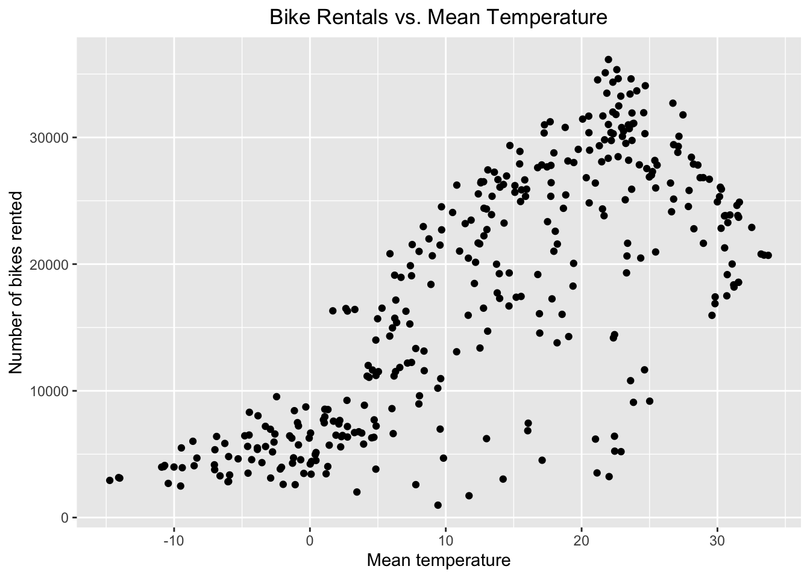

Rows: 8760 Columns: 14
── Column specification ────────────────────────────────────────────────────────
Delimiter: ","
chr (4): Date, Seasons, Holiday, Functioning Day
dbl (10): Rented Bike Count, Hour, Temperature(°C), Humidity(%), Wind speed ...
ℹ Use `spec()` to retrieve the full column specification for this data.
ℹ Specify the column types or set `show_col_types = FALSE` to quiet this message.
Exploratory Data Analysis
As the first step of the data exploration, we’ll check for missing values and compute some summaries for both the numeric and categorical variables in the dataset:
#Check for NA valuescolSums(is.na(bikeData))
Date Rented Bike Count Hour
0 0 0
Temperature(°C) Humidity(%) Wind speed (m/s)
0 0 0
Visibility (10m) Dew point temperature(°C) Solar Radiation (MJ/m2)
0 0 0
Rainfall(mm) Snowfall (cm) Seasons
0 0 0
Holiday Functioning Day
0 0
#Compute summary stats for all numeric variables, rounding to 2 decimal placespivot_longer(bikeData |>summarize(across(where(is.numeric),list("mean"=mean,"sd"=sd),.names="{.fn}_{.col}")),everything()) |>mutate (across(where(is.numeric), ~num(.x,digits=2)))
#Summarize levels for categorical variableslevels(as_factor(bikeData$Holiday))
[1] "No Holiday" "Holiday"
levels(as_factor(bikeData$`Functioning Day`))
[1] "Yes" "No"
levels(as_factor(bikeData$Seasons))
[1] "Winter" "Spring" "Summer" "Autumn"
There is no missing data to consider. The summary statistics for the bike counts and the weather variables appear to be reasonable, and the levels of the categorical variables are what we would expect.
The Date variable is a character vector in “dd/mm//yyyy” format, we’ll use lubridate to convert it to a proper date format. We also convert the categorical (character) variables into factors and rename the variables to a standard format for further analyses:
bikeData_rev <- bikeData |>mutate(Date=dmy(Date),Seasons=as.factor(Seasons),Holiday=as.factor(Holiday),`Functioning Day`=as.factor(`Functioning Day`))#Create a vector of new column names to apply to the tibblenew_names <-c("date","rented_bike_count","hour","temperature","humidity","wind_speed","visibility","dew_point","solar_radiation","rainfall","snowfall","seasons","holiday","functioning_day")names(bikeData_rev) <- new_names
Next, let’s look at a summary of bike rental days across the categorical variables for season, holiday, and functioning day:
# A tibble: 2 × 2
functioning_day n
<fct> <dbl>
1 No 0
2 Yes 6172314
We see that no bikes are rented on non-functioning days, so we can subset the data to include only functioning days. To create the dataset for modeling, we’ll summarize the hourly data for the number of bikes rented, rainfall, and snowfall to create one observation per day:
`summarise()` has grouped output by 'date', 'seasons'. You can override using
the `.groups` argument.
Let’s explore the summarized data by first looking at the same summary statistics for the number of bikes rented and then creating some scatterplots to see how the number of rentals varies by rainfall and mean temperature:
#Summarize by seasons and holidaybike_daily |>group_by(seasons) |>summarize(n=sum(bikes_rented))
# A tibble: 4 × 2
seasons n
<fct> <dbl>
1 Autumn 1790002
2 Spring 1611909
3 Summer 2283234
4 Winter 487169
# A tibble: 2 × 2
holiday n
<fct> <dbl>
1 Holiday 215895
2 No Holiday 5956419
rain_plot <-ggplot(bike_daily, aes(x = rainfall, y = bikes_rented)) +geom_point(position="jitter") +labs(x="Mean rainfall", y="Number of bikes rented", title="Bike Rentals vs. Rainfall") +theme(plot.title =element_text(hjust =0.5))rain_plot
temp_plot <-ggplot(bike_daily, aes(x = mean_temp, y = bikes_rented)) +geom_point(position="jitter") +labs(x="Mean temperature", y="Number of bikes rented", title="Bike Rentals vs. Mean Temperature") +theme(plot.title =element_text(hjust =0.5))temp_plot

The plot of bike rentals vs. mean rainfall is heavily skewed, with most of the observations clustered at 0 (no rainfall). The scatterplot for mean temperature suggests a nonlinear relationship with the number of bikes rented; that value peaks around 22 degrees and then tends to decrease. This association suggests that a higher-order term (e.g., quadratic) may be needed in a model to predict bike rentals using temperature.
Partitioning the Data
We’ll now partition the data, stratifying by season, into a training set (75%) and a test set (25%) and then create a 10-fold cross-validation set using the training data.
#Create initial splitset.seed(1434)bike_split <-initial_split(bike_daily, prop=0.75, strata=seasons)bike_train <-training(bike_split)bike_test <-testing(bike_split)#Create 10-fold cross-validation sets on the training databike_10_fold <-vfold_cv(bike_train,10)
Model Training
We’ll consider three models for predicting the total number of bike rentals per day. The first will have only main effects for type of day (weekday or weekend), seasons, and holiday along with predictors for the average weather variables for each day:
The second model extends the first model by adding interaction terms for season with holiday status and mean temperature along with an interaction between rainfall and mean temperature:
The last model adds to the second model by including quadratic terms for all of the continuous weather-related variables using orthogonal polynomials using step_poly:
• Orthogonal polynomials on: rainfall, snowfall, mean_temp, ... | Trained
With these model recipes complete, we can train each model using the 10-fold CV training set. We’ll then compare the model fits using the RMSE and R-squared metrics:
#Set model and model enginebike_model <-linear_reg() |>set_engine("lm")#Create workflowsbike_wf1 <-workflow() |>add_recipe(recipe1) |>add_model(bike_model)bike_wf1
#Fit the models and summarize model fit metricsbike_fit1 <- bike_wf1 |>fit_resamples(bike_10_fold)bike_fit2 <- bike_wf2 |>fit_resamples(bike_10_fold)bike_fit3 <- bike_wf3 |>fit_resamples(bike_10_fold)fit_metrics <-rbind(bike_fit1 |>collect_metrics(),bike_fit2 |>collect_metrics(),bike_fit3 |>collect_metrics())fit_metrics
# A tibble: 6 × 6
.metric .estimator mean n std_err .config
<chr> <chr> <dbl> <int> <dbl> <chr>
1 rmse standard 4141. 10 208. Preprocessor1_Model1
2 rsq standard 0.822 10 0.0288 Preprocessor1_Model1
3 rmse standard 3002. 10 140. Preprocessor1_Model1
4 rsq standard 0.908 10 0.0137 Preprocessor1_Model1
5 rmse standard 2993. 10 158. Preprocessor1_Model1
6 rsq standard 0.911 10 0.0127 Preprocessor1_Model1
Final Predictive Model
Based on the fit metrics, the third model has the smallest RMSE and the largest R-squared, so it appears to be the best fit for the data among the 3 models that were tested. We can now fit this model to the entire training data set created with initial_split and obtain the final fit metrics:
# A tibble: 2 × 4
.metric .estimator .estimate .config
<chr> <chr> <dbl> <chr>
1 rmse standard 3042. Preprocessor1_Model1
2 rsq standard 0.902 Preprocessor1_Model1
Homework 9: Additional Models
Next, we’ll add to the linear regression models by fitting LASSO models, regression tree models, bagged tree models, and random forest models. Like the linear regression models, the best model in each class will be selected using the 10-fold CV training set. The selected model will then be fit using the full training set and then tested on the test split.
LASSO model
LASSO_spec <-linear_reg(penalty =tune(), mixture =1) |>set_engine("glmnet")#Use the same recipe as the third linear regression model aboveLASSO_recipe <- recipe3#Create the workflowLASSO_wkf <-workflow() |>add_recipe(LASSO_recipe) |>add_model(LASSO_spec)LASSO_wkf
#Specify the grid for the tuning parameterLASSO_grid <- LASSO_wkf |>tune_grid(resamples = bike_10_fold,grid =grid_regular(penalty(), levels =200)) #Collect metrics and choose model with lowest RMSELASSO_grid |>collect_metrics() |>filter(.metric =="rmse")
# A tibble: 200 × 7
penalty .metric .estimator mean n std_err .config
<dbl> <chr> <chr> <dbl> <int> <dbl> <chr>
1 1 e-10 rmse standard 2952. 10 156. Preprocessor1_Model001
2 1.12e-10 rmse standard 2952. 10 156. Preprocessor1_Model002
3 1.26e-10 rmse standard 2952. 10 156. Preprocessor1_Model003
4 1.41e-10 rmse standard 2952. 10 156. Preprocessor1_Model004
5 1.59e-10 rmse standard 2952. 10 156. Preprocessor1_Model005
6 1.78e-10 rmse standard 2952. 10 156. Preprocessor1_Model006
7 2.00e-10 rmse standard 2952. 10 156. Preprocessor1_Model007
8 2.25e-10 rmse standard 2952. 10 156. Preprocessor1_Model008
9 2.52e-10 rmse standard 2952. 10 156. Preprocessor1_Model009
10 2.83e-10 rmse standard 2952. 10 156. Preprocessor1_Model010
# ℹ 190 more rows
lowest_rmse <- LASSO_grid |>select_best(metric ="rmse")#Finalize the workflow and fit the model on the full training setLASSO_final_wkf <- LASSO_wkf |>finalize_workflow(lowest_rmse)
Regression tree model
Next, we’ll fit a regression tree model using the rpart engine:
tree_spec <-decision_tree(tree_depth =tune(),min_n =20,cost_complexity =tune()) |>set_engine("rpart") |>set_mode("regression")#Use the first regression model recipe since interactions aren't neededtree_recipe <- recipe1#Create the workflowtree_wkf <-workflow() |>add_recipe(tree_recipe) |>add_model(tree_spec)tree_grid <- tree_wkf |>tune_grid(resamples = bike_10_fold)#Collect metrics and choose model with lowest RMSEtree_grid |>collect_metrics() |>filter(.metric =="rmse")
# A tibble: 10 × 8
cost_complexity tree_depth .metric .estimator mean n std_err .config
<dbl> <int> <chr> <chr> <dbl> <int> <dbl> <chr>
1 1.35e- 4 8 rmse standard 3924. 10 141. Preprocess…
2 5.17e- 2 4 rmse standard 5069. 10 180. Preprocess…
3 5.13e- 3 7 rmse standard 3917. 10 148. Preprocess…
4 1.67e- 7 2 rmse standard 4933. 10 154. Preprocess…
5 4.03e- 9 4 rmse standard 4417. 10 142. Preprocess…
6 5.04e- 7 14 rmse standard 3932. 10 140. Preprocess…
7 2.16e-10 11 rmse standard 3932. 10 140. Preprocess…
8 2.53e- 8 12 rmse standard 3932. 10 140. Preprocess…
9 3.56e- 6 6 rmse standard 3894. 10 148. Preprocess…
10 6.45e- 4 13 rmse standard 3934. 10 143. Preprocess…
# A tibble: 6 × 7
mtry .metric .estimator mean n std_err .config
<int> <chr> <chr> <dbl> <int> <dbl> <chr>
1 6 rmse standard 3103. 10 104. Preprocessor1_Model1
2 9 rmse standard 3043. 10 111. Preprocessor1_Model2
3 11 rmse standard 3028. 10 112. Preprocessor1_Model3
4 3 rmse standard 3274. 10 94.8 Preprocessor1_Model4
5 12 rmse standard 3017. 10 113. Preprocessor1_Model5
6 7 rmse standard 3076. 10 104. Preprocessor1_Model6
rf_best_params <-select_best(rf_fit, metric="rmse")#Finalize the workflow and run the final model on the full training setrf_final_wkf <- rf_wkf |>finalize_workflow(rf_best_params)
Compare models on test set
Let’s compare all of the model predictions on the test set using RMSE and MAE as the metrics:
#Get predictions from final models on test datasetMLR_final_pred <- bike_wf3 |>fit(bike_train) |>predict(bike_test) |>pull()LASSO_final_pred <- LASSO_final_wkf |>fit(bike_train) |>predict(bike_test) |>pull()tree_final_pred <- tree_final_wkf |>fit(bike_train) |>predict(bike_test) |>pull()bag_final_pred <- bag_final_wkf |>fit(bike_train) |>predict(bike_test) |>pull()rf_final_pred <- rf_final_wkf |>fit(bike_train) |>predict(bike_test) |>pull()true_rentals <- bike_test$bikes_rented#Compute RMSE and MAE for each modelMLR_metrics <-c("rmse"=MLR_final_pred |>rmse_vec(truth = true_rentals),"mae"=MLR_final_pred |>mae_vec(truth = true_rentals))MLR_metrics
The random forest model has the smallest RMSE, but the multiple linear regression has the smallest MAE among these classes of models. Let’s summarize the structure of each of these models, starting with model effects tables for the multiple linear regression and LASSO models:
rf_res <-last_fit(rf_final_wkf, split = bike_split)extract_fit_parsnip(rf_res$.workflow[[1]]) |> vip::vi() |>mutate(term=factor(Variable, levels=Variable)) |>ggplot(aes(x = term, y = Importance)) +labs(title="Variable Imporance for Random Forest Model") +theme(plot.title =element_text(hjust =0.5)) +geom_bar(stat ="identity") +coord_flip()
For both of these ensemble models, we can see that the average daily temperature is the most important predictor, with solar radiation and dew point being second and third most important.
If we use RMSE as the criterion for choosing the best model, then the random forest would be selected. We’ll now fit that model on the full dataset:
#Fit model to the full dataset and obtain predictionsrf_full_pred<- rf_final_wkf |>fit(bike_daily) |>predict(bike_daily) |>pull()true_bikes <- bike_daily$bikes_rented#Get RMSE and MAE for predictionsrf_metrics <-c("rmse"=rf_full_pred |>rmse_vec(truth = true_bikes),"mae"=rf_full_pred |>mae_vec(truth = true_bikes))rf_metrics